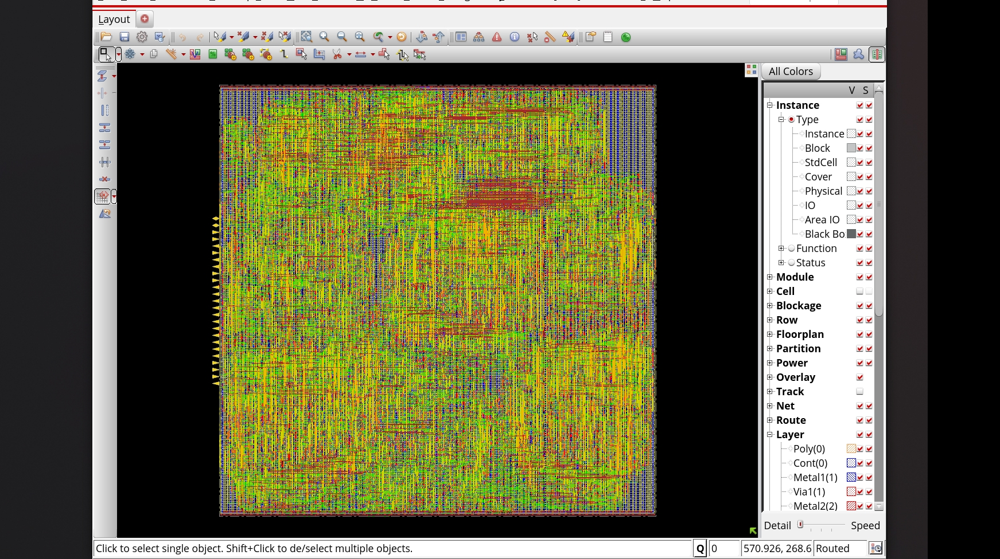

This in-progress project, MagSens, develops a mixed-signal back-end for Hall-effect magnetic field sensing that is resilient to long-term drift and low-frequency noise. Building on a 45 nm analog front-end with temperature-stable biasing, low-noise amplification and a SAR ADC, the digital chain performs calibration, oversampling, drift tracking, and 50/60 Hz interference suppression to recover a stable 3D field vector suitable for SoC integration. The goal is a low-power, robust magnetic sensing back-end that maintains accuracy over time despite sensor aging and temperature variation, and the full architecture is currently being implemented and verified as part of CE 493: Advanced Low Power Digital and Mixed-Signal IC Design.
